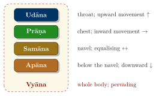
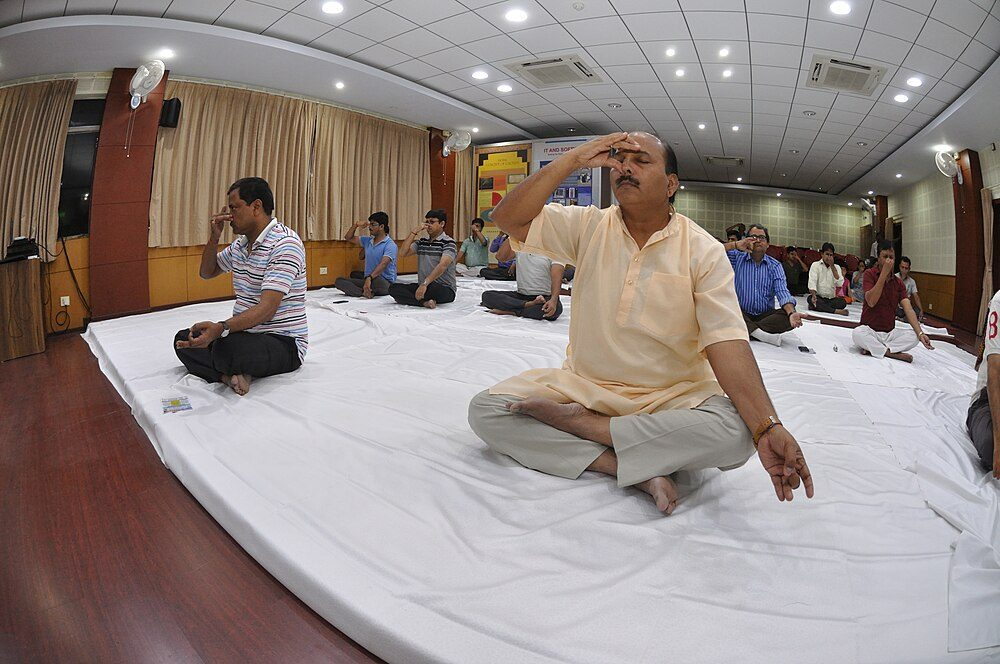
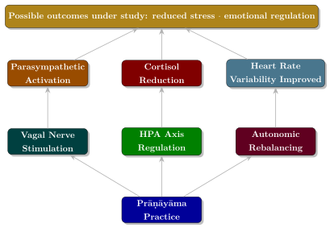

Chapter 8: Prāṇāyāma: Breath and Its Regulation¶
Haṭha Yoga Pradīpikā 2.2
cale vāte calaṃ cittaṃ niścale niścalaṃ bhavet
yogī sthāṇutvam āpnoti tato vāyuṃ nirodhayet
When the breath is unsteady, the mind is unsteady. When the breath is steady, the mind is steady, and the yogi attains stillness. Therefore, one should restrain the breath.
8.1 The Meaning of Prāṇāyāma¶
The word prāṇāyāma is composed of two Sanskrit terms: prāṇa (vital life force, breath) and āyāma (extension, expansion, regulation). Thus, prāṇāyāma literally means “the extension or regulation of the vital life force.” It is the fourth limb of Patañjali’s Aṣṭāṅga Yoga and occupies a central position in the entire Haṭha Yoga tradition.
Definition: Prāṇa
Prāṇa is not merely the physical breath but the universal vital energy that pervades all creation. In the individual, it manifests as the life force that sustains the body, mind, and senses. The breath is the gross manifestation of this subtle energy.
8.2 The Five Prāṇas (Pañca Prāṇa)¶
The Yoga tradition teaches that prāṇa operates in the body through five principal functions (pañca prāṇa) and five subsidiary functions (pañca upa-prāṇa) (Tables 8.1 and 8.2; Figure 8.1).
| Prāṇa | Direction | Region | Function |
|---|---|---|---|
| Prāṇa | Inward | Heart, chest | Respiration; intake of food and experience |
| Apāna | Downward | Below navel | Elimination; excretion; childbirth |
| Samāna | Equalising | Navel region | Digestion; assimilation; metabolism |
| Udāna | Upward | Throat, head | Speech; growth; at death, departure of soul |
| Vyāna | Pervading | Entire body | Circulation; distribution of energy |
| Upa-Prāṇa | Function |
|---|---|
| Nāga | Belching; hiccupping |
| Kūrma | Blinking; opening and closing of the eyes |
| Kṛkara | Sneezing; causing hunger |
| Devadatta | Yawning |
| Dhanañjaya | Pervading the entire body; remains after death (decomposition) |

8.3 The Three Phases of Prāṇāyāma¶
In the Haṭha texts every prāṇāyāma has three phases: inhalation (pūraka, “filling”), retention (kumbhaka, from kumbha, “pot”, the body being filled like a pot) and exhalation (recaka, “emptying”). Retention is the heart of the practice, and the texts distinguish two kinds: sahita kumbhaka, deliberate retention “accompanied” by inhalation and exhalation, and kevala kumbhaka, “isolated” retention, in which the breath stops of itself. The second is the goal; the HYP says that for one who has mastered it nothing in the three worlds is hard to attain. Because retention is dangerous, the texts insist on gradual progress:
HYP 2.15
yathā siṃho gajo vyāghro bhaved vaśyaḥ śanaiḥ śanaiḥ
tathaiva sevito vāyur anyathā hanti sādhakam
Just as lions, elephants, and tigers are tamed gradually, so the breath must be brought under control step by step. Otherwise it destroys the practitioner.
8.4 Classical Prāṇāyāma Techniques¶
After alternate-nostril purification of the channels, the HYP teaches eight kumbhakas (2.44): sūryabhedana, ujjāyī, sītkārī, śītalī, bhastrikā, bhrāmarī, mūrcchā and plāvinī. The techniques below, with kapālabhāti, are described for historical understanding; the benefits listed are those claimed by the texts or by modern teachers unless a study is cited.
Health and Safety Note
Breath retention and forceful breathing (kapālabhāti, bhastrikā) can cause dizziness, fainting and hyperventilation, and are unsuitable in pregnancy and for people with high blood pressure, heart disease, epilepsy, glaucoma, hernia or recent surgery. The HYP itself (2.16–17) warns that improper practice causes hiccups, asthma, cough, headache and pain in the ears and eyes. Learn from a qualified teacher and seek medical advice if you have any health condition.
8.4.1 Nāḍī Śodhana (Alternate Nostril Breathing)¶
Nāḍī Śodhana is the foundational prāṇāyāma practice, designed to purify the subtle energy channels (nāḍīs) and balance the solar and lunar energies.
HYP 2.7
baddha-padmāsano yogī prāṇaṃ candreṇa pūrayet
dhārayitvā yathā-śakti bhūyaḥ sūryeṇa recayet
Seated in Padmāsana, the yogi should inhale through the left (lunar) nostril, retain as long as he is able, then exhale through the right (solar) nostril. (The following verses reverse the sequence: inhale through the right, retain, and exhale through the left.)
Technique:
-
Close the right nostril with the thumb; inhale through the left nostril (Pūraka)
-
Close both nostrils; retain the breath (Kumbhaka)
-
Release the right nostril; exhale through it (Recaka)
-
Inhale through the right nostril (Pūraka)
-
Close both nostrils; retain (Kumbhaka)
-
Release the left nostril; exhale through it (Recaka)
-
This completes one round
Ratio: Later texts such as the Śāṇḍilya Upaniṣad prescribe a ratio of 1:4:2 (inhalation : retention : exhalation), measured in syllabic units (mātrā). Modern teachers start beginners with retention-free, equal breathing (Figure 8.2).


8.4.2 Kapālabhāti (Skull-Shining Breath)¶
Kapālabhāti is technically classified as a ṣaṭkarma (purificatory practice) rather than a prāṇāyāma, though it is often included in prāṇāyāma sequences.
Technique: Rapid, forceful exhalations through the nose with passive, automatic inhalations. The abdominal muscles are vigorously contracted during each exhalation.
Claimed benefits: The HYP (2.35) says it destroys disorders of phlegm (kapha). Modern claims that it “purifies the frontal lobes” have no basis.
8.4.3 Bhastrikā (Bellows Breath)¶
The HYP compares this practice to the working of a blacksmith’s bellows.
Technique: Vigorous, forceful inhalations and exhalations through the nose, like the pumping of bellows. Both inhalation and exhalation are active and forceful.
Claimed benefits (HYP): Stokes the digestive fire (jaṭharāgni), removes disorders of all three humours, breaks the three granthis, awakens kuṇḍalinī.
8.4.4 Ujjāyī (Victorious Breath)¶
Technique: Inhalation through both nostrils with a slight constriction of the glottis, producing a soft, ocean-like sound in the throat. Exhalation may be through the left nostril or through both nostrils.
HYP 2.51
mukhaṃ saṃyamya nāḍībhyām ākṛṣya pavanaṃ śanaiḥ
yathā lagati kaṇṭhāt tu hṛdayāvadhi sasvanam
Closing the mouth, draw in the air slowly through both nostrils so that it produces a sound from the throat to the heart.
Claimed benefits (HYP): Removes phlegm in the throat, increases the digestive fire, and cures disorders of the channels.
8.4.5 Śītalī (Cooling Breath)¶
Technique: Roll the tongue into a tube; inhale through the rolled tongue with a cooling sensation; retain; exhale through the nostrils.
Claimed benefits (HYP 2.57–58): Cools the body; cures disorders of the spleen, fever and bile; counteracts hunger, thirst and poison.
8.4.6 Sītkārī (Hissing Breath)¶
Technique: Inhale through the clenched teeth with a hissing sound (sīt); retain; exhale through the nostrils.
Claimed benefits: Similar to Śītalī; often taught to those who cannot roll the tongue.
8.4.7 Bhrāmarī (Humming Bee Breath)¶
Technique: Inhale through both nostrils; during exhalation, produce a deep humming sound like a male bee (bhrāmara). The sound should resonate in the head.
Claimed benefits: The HYP says it brings an indescribable joy to the mind; modern teachers use it to prepare for meditation on inner sound (Chapter 10).
8.4.8 Sūryabhedana, Mūrcchā and Plāvinī¶
The remaining three kumbhakas of the HYP are less often taught. In sūryabhedana (“piercing the sun”) the yogin inhales through the right, solar nostril, holds the breath and exhales through the left; the text says it purifies the skull and destroys intestinal worms and disorders of wind. In mūrcchā (“swooning”) the breath is held with the chin lock until the mind faints into a pleasant stillness. In plāvinī (“floating”) the belly is filled with air, and the yogin, the text claims, floats on water like a lotus leaf.
8.5 Signs of Progress in Prāṇāyāma¶
The Haṭha texts describe progressive signs of success. The HYP (2.12) says that at the lowest level the practitioner sweats, at the middle level trembles, and at the highest the breath “reaches its place”. The Śiva Saṃhitā describes four stages of practice — beginning (ārambha), the “pot” (ghaṭa), familiarity (paricaya) and consummation (niṣpatti) — in which the body first sweats and grows lean and bright, then trembles and may hop “like a frog”, then becomes light enough, the text claims, to rise from the ground, and finally attains Rāja Yoga. The same four names are given in the HYP to the stages of inner sound (Chapter 10). These are textual claims, not observed results.
8.6 Precautions and Guidelines¶
Key Point: Essential Precautions for Prāṇāyāma
-
Guru’s guidance — Always learn from a qualified teacher
-
Gradual progression — Never force the breath; increase duration slowly
-
Empty stomach — Practise on an empty stomach (several hours after a meal)
-
Clean environment — A well-ventilated, quiet, clean space
-
Moderate diet — Mita-āhāra (moderate, sāttvika food)
-
Regular timing — Best times: brāhma muhūrta (pre-dawn), sunset
-
Steady posture — Must be seated in a firm, comfortable āsana
-
No strain — If dizziness, nausea, or headache occurs, stop and rest
8.7 The Relationship Between Breath and Mind¶
One of the most profound insights of Yoga is the intimate connection between breath and mind. As the HYP declares (2.2): “When the breath is unsteady, the mind is unsteady. When the breath is steady, the mind becomes steady.” This bi-directional relationship means that by controlling the breath, one gains control over the mind, and vice versa.
Modern research supports a more limited version of this insight. Slow, controlled breathing shifts autonomic balance towards parasympathetic activity and can reduce subjective anxiety; evidence for effects on cortisol and on EEG rhythms is less consistent, and many studies are small (Zaccaro et al. 2018).
HYP 4.29
indriyāṇāṃ mano nātho mano-nāthas tu mārutaḥ
mārutasya layo nāthaḥ sa layo nādam āśritaḥ
The mind is lord of the senses; the breath is lord of the mind; absorption (laya) is lord of the breath, and that absorption rests on the inner sound (nāda).
8.8 Prāṇāyāma in the Textual Tradition¶
The oldest description of breath-control as a technique of meditation is in the Śvetāśvatara Upaniṣad, in the verse that follows its instruction on posture (Chapter 1):
Śvetāśvatara Upaniṣad 2.9
prāṇān prapīḍyeha sa yukta-ceṣṭaḥ kṣīṇe prāṇe nāsikayocchvasīta
duṣṭāśva-yuktam iva vāham enaṃ vidvān mano dhārayetāpramattaḥ
Restraining his breaths here, with his movements controlled, he should breathe out through the nose when the breath is diminished. The wise one should hold the mind attentively, as one holds a chariot yoked to unruly horses.
Here, as in Patañjali, the restraint of the breath serves the restraint of the mind. Table 8.3 summarises how later texts developed the practice.
| Text | Period | Key Teachings on Prāṇāyāma |
|---|---|---|
| Bhagavad Gītā | c. 2nd c. BCE–2nd c. CE | Prāṇa-apāna offerings; prāṇāyāma as sacrifice (yajña) (4.29) |
| Yoga Sūtras | c. 325–425 CE | Fourth limb; external, internal and suspended movements regulated by place, time and number; a “fourth” beyond these |
| Yogayājñavalkya | c. 13th–14th c. CE | Prāṇāyāma with fixation of the breath on the elements in the body; therapeutic applications |
| Haṭha Yoga Pradīpikā | c. 1450 CE | Eight kumbhakas detailed; emphasis on nāḍī purification; signs of success; mitāhāra |
| Śiva Saṃhitā | c. 15th c. CE | Four stages of practice; retention with bandhas; kuṇḍalinī |
| Gheraṇḍa Saṃhitā | c. 1700 CE | Eight kumbhakas, including sahita and kevala; breathing combined with mantra (sagarbha) |
8.9 Patañjali’s Analysis of Prāṇāyāma¶
Patañjali devotes five sūtras (2.49–2.53) to prāṇāyāma. His definition (2.49, quoted in Section 2.5.4) is striking: once posture is mastered, prāṇāyāma is the interruption (gati-viccheda) of the movement of in-breath and out-breath — a cessation, not a technique of breathing. The next sūtra classifies that cessation:
Yoga Sūtra 2.50
bāhyābhyantara-stambha-vṛttir deśa-kāla-saṃkhyābhiḥ paridṛṣṭo dīrgha-sūkṣmaḥ
Prāṇāyāma has external, internal, and suspended movements, regulated by place, time, and number, becoming prolonged and subtle.
Following Vyāsa’s commentary, the three movements are explained in Table 8.4. Note that all three are forms of retention; Vyāsa does not equate bāhya and ābhyantara with exhalation and inhalation, as some modern manuals do.
| Type | Sanskrit | Description |
|---|---|---|
| External | Bāhya Vṛtti | Retention after exhalation; the breath is held outside |
| Internal | Ābhyantara Vṛtti | Retention after inhalation; the breath is held inside |
| Suspended | Stambha Vṛtti | Suspension of both movements at once, by a single effort, wherever the breath happens to be |
The fourth type of prāṇāyāma described in Sūtra 2.51 is the most significant:
Yoga Sūtra 2.51
bāhyābhyantara-viṣayākṣepī caturthaḥ
The fourth (type of prāṇāyāma) transcends the domain of the external and the internal.
Scholarly Note
This enigmatic “fourth prāṇāyāma” has been interpreted by commentators in various ways. Vyāsa understands it as a state that transcends the deliberate regulation of breath entirely — a spontaneous cessation that occurs in deep meditation. It is often compared to the kevala kumbhaka of the Haṭha Yoga tradition. The result of this mastery, Patañjali states in Sūtra 2.52, is that “the covering of light is dissolved” (tataḥ kṣīyate prakāśāvaraṇam) — the veil of ignorance is thinned, and the inner light of the Self becomes visible.
8.10 The Role of Bandhas in Prāṇāyāma¶
The three bandhas or “locks” — the root lock at the perineum (mūla), the abdominal lock that makes the “great bird” of the breath fly up (uḍḍīyāna) and the chin lock (jālandhara) — are described with the other mudrās in Chapter 7 (Table 7.6). In the Haṭha texts they are integral to kumbhaka. The HYP prescribes jālandhara at the end of inhalation and uḍḍīyāna at the end of retention; applied together during kumbhaka (modern teachers call this bandha-traya), the locks are said to force the breath into the suṣumnā and awaken kuṇḍalinī.
8.11 Prāṇāyāma Ratios and Progressive Training¶
Later texts prescribe ratios of inhalation, retention and exhalation, measured in units (mātrā), and the Śāṇḍilya Upaniṣad’s 1:4:2 is the best known. Modern teachers usually begin with equal breathing without retention and lengthen the exhalation and then the retention by stages; such schemes are not a training programme, and long retentions should not be attempted without supervision.
Key Point: The Principle of Gradualism (Krama)
All traditional texts emphasise that prāṇāyāma must be developed gradually (śanaiḥ śanaiḥ). Just as a lion tamer gradually tames a wild animal, the yogi must gradually bring the breath under control. Forcing the breath leads to illness, mental disturbance, and even danger. The hallmark of correct practice is that it produces feelings of lightness, clarity, and joy — never strain, dizziness, or agitation.
8.12 Modern Scientific Understanding of Prāṇāyāma¶
Contemporary research has begun to investigate the physiological effects of controlled breathing. The diagram shows mechanisms that are proposed and partly supported; the outcomes in the top box are hypotheses under study, not established effects of prāṇāyāma (Figure 8.3).

Key research findings include:
-
Slow breathing (about 6 breaths/minute): Engages the baroreflex and increases heart rate variability (a marker of healthy autonomic regulation); this rate is close to the resonant frequency of the cardiovascular system and is the basis of HRV biofeedback (Lehrer and Gevirtz 2014; Zaccaro et al. 2018).
-
Alternate nostril breathing (Nāḍī Śodhana): Small trials report short-term reductions in blood pressure and anxiety; popular claims that it “balances the hemispheres” of the brain are not established.
-
Humming (as in Bhrāmarī): Weitzberg and Lundberg found that humming increases nasal nitric oxide about fifteen-fold compared with quiet exhalation, probably by improving ventilation of the paranasal sinuses (Weitzberg and Lundberg 2002). Claims of wider cardiovascular benefit do not follow from this finding.
-
Kumbhaka (Breath Retention): Breath-holding produces falling blood oxygen and rising carbon dioxide; it has measurable effects on cerebral blood flow, but prolonged retention carries risks and its long-term effects are poorly studied.